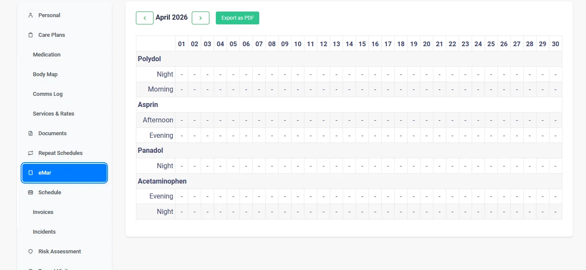
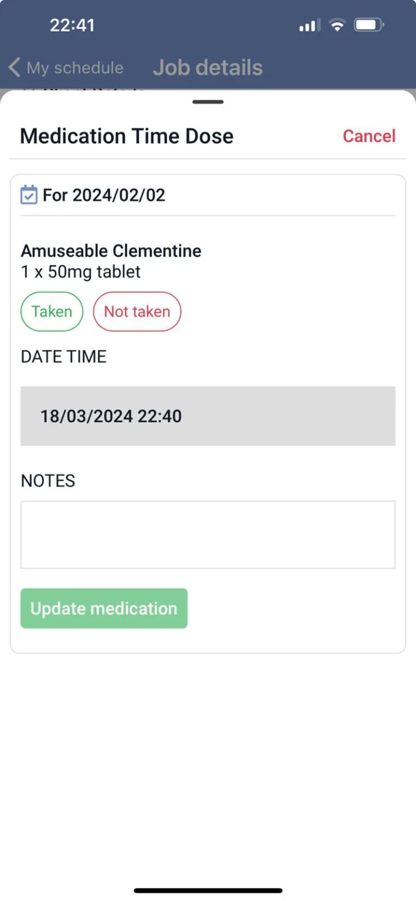

eMAR — Electronic Medication Administration Records
HMCarePlanner eMAR module provides a digital version of client medication schedules, delivery and administration — ensuring patient safety and compliance.
Digital Medication Management
Replace paper MAR charts with a secure digital workflow that supports carers in real time. HMCarePlanner eMAR helps your team administer the right medication, at the right time, with clear records for every visit.
From setup to administration and manager oversight, every step is captured in one place: medication profile, dosage schedule, administration outcome, notes, and alerts. This reduces missed doses, improves communication between office and field teams, and keeps your agency inspection-ready.
What this means for your agency
- Fewer medication incidents through clear prompts and due-time visibility
- Faster manager response with instant alerts for missed or refused doses
- Stronger CQC evidence with complete, timestamped administration records
Digital Medication Schedules
Create structured medication profiles for each client with dosage, frequency, route, and instructions. Carers see exactly what is due during each visit, reducing ambiguity and handover errors.
Automated Reminders
Automatic reminders highlight upcoming and overdue doses so carers can prioritise safely. Managers can also monitor due items from the office and intervene quickly when needed.
Real-Time Monitoring
Track medication outcomes as they happen: administered, refused, not available, or missed. This gives coordinators immediate visibility and supports safer follow-up decisions.
Complete Audit Trail
Every update is logged with user, timestamp, and notes, giving you a defensible audit trail for internal governance and CQC inspections without manual paperwork collation.


eMAR FAQs
What is eMAR in domiciliary care?
eMAR (Electronic Medication Administration Record) is a digital replacement for paper MAR charts. It allows care workers to record medication administration on a phone or tablet in real time, creating an automatic audit trail and reducing the risk of missed or incorrect doses.
How does eMAR reduce medication errors?
eMAR shows carers exactly which medications are due, at what time, and in what dose. It prompts for confirmation before marking as administered and flags any missed or late doses immediately. This eliminates the common errors found in handwritten paper records.
Is eMAR required by the CQC?
While the CQC does not mandate eMAR specifically, they do require accurate, up-to-date medication records with a clear audit trail. eMAR systems make it significantly easier to meet these requirements and have been cited positively in CQC inspection reports.
Does HMCarePlanner eMAR cost extra?
No. Our eMAR module is included as standard in every HMCarePlanner plan at no additional cost. Many competitors charge extra for medication management — we include it because we believe it's essential for safe care delivery.
Can managers see medication records in real time?
Yes. As soon as a carer records a medication administration on the mobile app, it's visible on the management dashboard. Managers receive instant alerts for any missed doses, enabling quick intervention when needed.
How do I switch from paper MAR charts to eMAR?
Simply set up your clients' medication profiles in HMCarePlanner. Our team provides free training and onboarding support. Most agencies complete the transition within a few days, and carers find the digital system easier than paper charts.